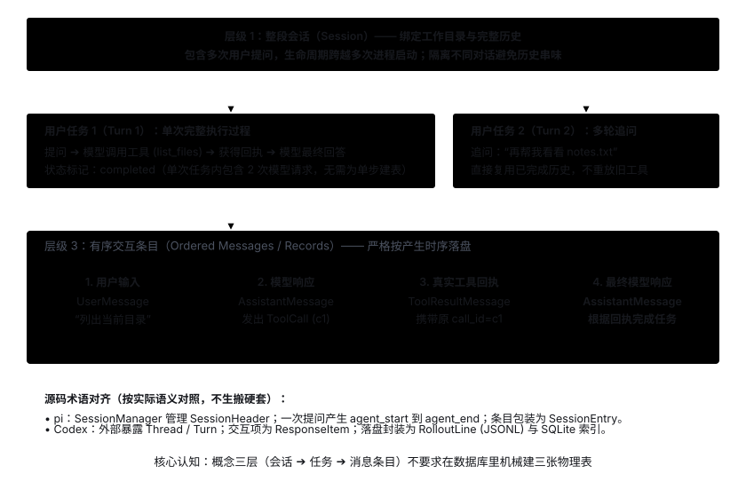
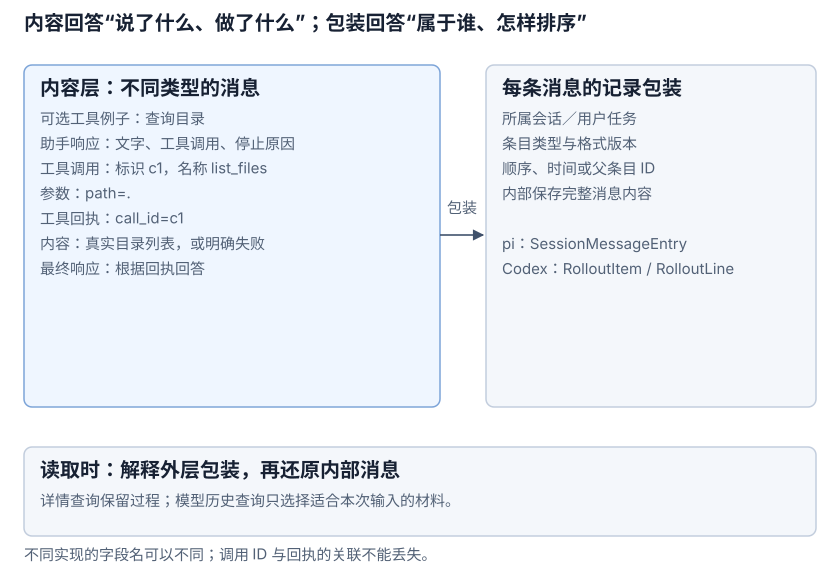
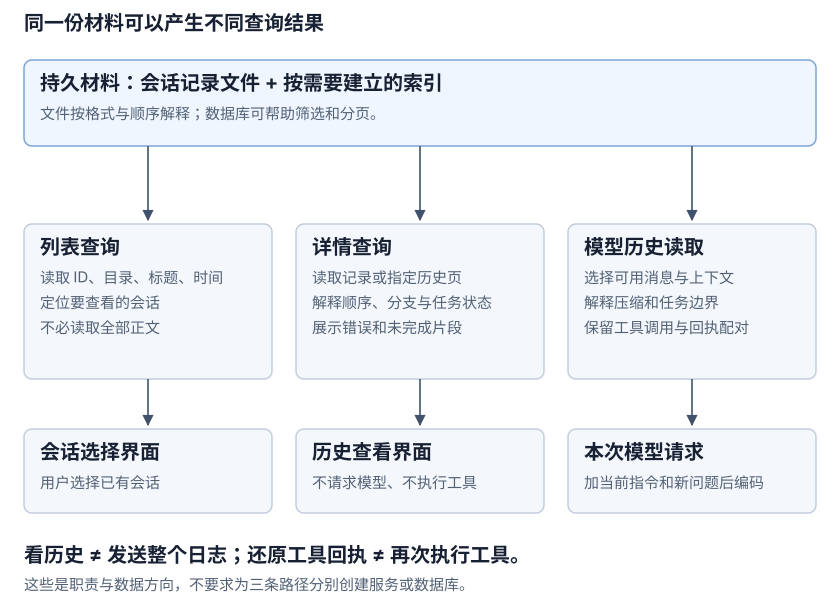

Session / State: Manage Sessions & Execution Records
1. Starting Problem: Why Do Multi-Turn Conversations and Debugging Depend on State Records?
By default, both model APIs and single-run CLI processes are stateless. Consider this multi-turn conversation scenario:
- User: "In this conversation, please call me Starlight."
- Model: "Got it, Starlight."
- (The process exits and is launched again)
- User: "What did I just ask you to call me?"
Unless the earlier conversation was persisted to disk, the restarted process cannot supply that history to the model, nor can the user inspect what happened previously. Therefore, the Session / State module is dedicated to three responsibilities:
- Isolate and group by session: Group a continuous conversation under a single
Sessionso histories from different conversations never bleed into each other. - Preserve complete interaction records: Record user prompts, full model responses, and actual tool receipts in strict sequential order.
- Provide purpose-built read views: Support both offline inspection of the full transcript by users and reconstruction of usable context for the next model request.
This module only handles storing and retrieving state and records—it does not invoke models, execute tools, or evaluate permissions; furthermore, merely saving conversation history does not automatically confer crash-recovery capabilities.
2. Data Granularity: From a Full Session Down to Individual Messages
Observing an interaction that spans multiple follow-up questions and tool calls naturally reveals three data levels:
- Full Session (
Session): Links multiple user prompts, workspace configuration, and complete history across multiple process invocations. - Single User Task (
Turn): Starts when a user prompt arrives, may span multiple model requests and tool calls inside the loop, and ends when a final answer is produced, an error occurs, or execution is interrupted. - Individual Record Item (
Message / Record): User inputs, model responses, tool calls, and tool receipts. A single model request is just one internal step of the loop and does not need its own separate persistence table.

How pi and Codex Name These Levels
| Level | pi Implementation | Codex Implementation |
|---|---|---|
| Full continuous conversation | SessionManager manages SessionHeader and the entry tree. | Externally called Thread; internally also maintains a runtime Session and session_id. |
| Execution triggered by one user prompt | A single Agent prompt / loop run emits agent_start through agent_end without needing a separate Run table. | Externally represented as a Turn covering a complete unit of work, with id, items, status, and optional error. |
| Single model response & tool results | In pi, a turn refers to one assistant response plus its tool calls and results; one user prompt can span multiple turns. | A single Turn can invoke the model and execute tools multiple times; in Codex, a Turn is not a single model request. |
| Individual record item | AgentMessage is the message payload; SessionEntry is the outer persistence wrapper. | ThreadItem is used for external display; ResponseItem represents model interaction items; RolloutItem is used for on-disk persistence. |
Source basis: pi AgentEvent turn definition, pi runLoop, Codex Thread / Turn, and ThreadItem.
3. What Core Data Must Each Level Store?
- Session Metadata: Contains the unique session ID, record format version, creation timestamp, and bound workspace directory. The workspace path is used to verify that follow-up turns still operate against the same resource environment.
- Single Task Boundary (Turn Boundary): Contains the turn ID, start/end markers, completion status (
completed/failed/ unfinished), and error details, separating "completed history" from "fragments left by an unexpected interruption." - Ordered Content Entries (Ordered Messages): Saves user prompts, full model responses, tool call arguments, and actual receipts with strictly increasing sequence numbers, pairing calls and receipts 1-to-1 via
call_id(timestamps alone cannot guarantee ordering). - Per-request assembly config (not persistent history): System instructions, tool schemas, and output token caps are request configurations assembled dynamically on each model call and do not need to be duplicated inside every historical message.
4. Comparing Message Structures: Text, Tool Calls & Receipts (pi vs. Codex)
Message records cannot store only the final plain text shown to the user—they must also preserve model-issued tool calls, reasoning or protocol continuation data, and actual tool receipts. Below we compare pi and Codex message structures using a directory-listing tool call scenario:
pi: Three Base Message Types Composed of Structured Content Blocks
| Base Type | Primary Fields | Role in Directory-Listing Scenario |
|---|---|---|
UserMessage | role="user"; content is plain text or an array of text/image blocks; includes timestamp. | Records the user prompt: "What files are in the current directory?" |
AssistantMessage | role="assistant"; content contains TextContent, ThinkingContent, and ToolCall; also includes model name, usage, stopReason, etc. | A single response can contain both explanatory text and tool call requests—you cannot keep only plain text. |
ToolResultMessage | role="toolResult"; includes toolCallId, toolName, content, isError, etc. | Stores the actual receipt after listing the directory, linked back to the call via toolCallId. |
Source basis: pi message definitions and AgentState / AgentMessage (the system prompt lives in AgentState.systemPrompt rather than mixing into the three base message types).
Codex: Model Interactions Uniformly Represented as ResponseItem
| Variant | Primary Contents | Key Association |
|---|---|---|
Message | role, content blocks, with optional id, status, phase. | Distinguishes user and assistant roles; phase marks the output phase. |
FunctionCall | name, arguments, call_id. | Preserves the raw call arguments generated by the model and links to the execution output via call_id. |
FunctionCallOutput | call_id and output. | Pairs the tool's actual output with the original call. |
Reasoning | Reasoning summary, content, or encrypted continuation data. | Preserved verbatim for subsequent requests; must not be casually dropped or mutated. |
Source basis: Codex ResponseItem and ContentItem.

Separating inner messages from outer record wrappers: pi's SessionMessageEntry wraps message with type, id, parentId, and timestamp; Codex's RolloutLine wraps RolloutItem. Outer fields serve on-disk persistence and history reconstruction, whereas only the unwrapped inner messages are extracted when sending requests to the model.
5. Comparing Storage Media: In-Memory, JSONL & SQLite
- In-memory state (In-Memory): Holds currently active context messages, streaming chunks, and live network connections; released when the process exits.
- Append-only JSONL files: One JSON object per line, naturally matching chronologically appended conversation logs with zero database dependencies and easy manual inspection.
- SQLite relational storage / indexing: Ideal for multi-dimensional filtering across thousands of sessions (paginated queries by workspace, title, or timestamp), transactional updates, and concurrency control.
pi: In-Memory Tree Index + Single-Session JSONL File
SessionManager maintains fileEntries, byId, and the current leaf node leafId in memory, persisting each session to a single JSONL file. The first line records the schema version, ID, timestamp, and workspace directory cwd; subsequent entries express conversation branches via id and parentId without needing relational tables.
Codex: JSONL Rollout Body + SQLite Metadata Index
RolloutRecorder asynchronously appends full interaction items (RolloutItem) to a JSONL file while using SQLite to maintain thread metadata for fast pagination and search (thread_history/read.rs).
6. State Mutation Patterns: Append-Only Writes & Metadata Updates
- Runtime in-memory state — in-place updates: Append new messages, concatenate streaming deltas, track pending tool IDs, or update error states.
- Persistent conversation history — append-only: New messages and turn completion markers are appended sequentially to the end of the file, preserving an immutable audit trail.
- Session management metadata — updated on demand: Operations such as renaming a session, archiving, or switching branch pointers (see pi's branch / appendSessionInfo and Codex's update_thread_metadata.rs and archive_thread.rs).
7. Three Read Paths: Session List, Transcript Details & Context Reconstruction

- Query session list: Reads only file headers or index metadata (ID, workspace directory, updated timestamp) without loading full conversation bodies (see Codex list_threads.rs).
- Inspect single-session transcript: Reconstructs the entire session record in order (including failed errors and unfinished fragments) for developer debugging or user review, without invoking the model or replaying tools (see Codex read_thread.rs).
- Reconstruct model context: Filters for completed turns with closed message chains and processes branch or compaction markers to reconstruct the model message list (see pi buildSessionContext and Codex load_latest_model_context and rollout_reconstruction.rs).
8. Collaboration Boundaries with the Agent Loop: State, Events & Safe Interruption Recovery
8.1 Collaboration Division: State, Event & Loop
- Initialization vs. runtime division: At initialization, the application entry point opens or creates a session; at runtime, the Loop first reads completed history to assemble the request, then calls write methods sequentially as user prompts, model responses, tool receipts, and turn completion statuses arrive.
- State (current snapshot view) vs. Event (state transition notification): State represents a point-in-time snapshot (such as the active message chain or pending tools), while an Event represents a transition (such as pi's processEvents and AgentSession). In a single-process setup, the Loop can call persistence methods directly without requiring a complex event bus.
- Multi-turn continuation is not crash recovery: Sending a new follow-up prompt on top of completed history (
completed) is "multi-turn continuation," whereas resuming an unfinished task from a crash, network failure, or process kill is "safe crash recovery (Checkpoint & Resumption)". Persisting chat messages alone does not automatically grant safe crash recovery capability.
8.2 Core Dilemma of Interruption Recovery: Why Logs Cannot Be Replayed Blindly
Consider a typical crash scenario during tool execution:
- Model: Proposes
write_file(path="config.yaml", content="...")or calls an external payment/order API. - (System execution: Underlying file write occurs on physical disk, or external payment succeeds)
- (Sudden crash: Before writing the execution receipt to the JSONL log, the machine loses power or crashes due to OOM)
At this moment, persistent logs only record "model initiated call request", but contain no "tool execution receipt". If restarted by naively replaying the log as a script, the file will be overwritten twice or customer orders will be double-charged!
Thus, systems must strictly separate three distinct state objects:
| Object Type | What It Records | Role in Crash Recovery |
|---|---|---|
| Transcript / SessionLog | Sequenced user prompts, model responses, and tool receipts | Proves "what happened in the conversation" for context assembly and audit replay |
| Execution Checkpoint | Current step index, state machine node pointer, pending logical invocation ID | Records "how far execution advanced" as the anchor for restart positioning |
| Execution Receipt / Evidence | Physical world reality check (e.g. disk lstat, content hash, external API idempotent query) |
Verifies "whether the action truly took effect in physical reality", resolving uncertainty during timeouts and missing logs |
8.3 Four Action States during Interruption Recovery
When the recovery pipeline scans checkpoints and unclosed actions, it must distinguish four concrete underlying states rather than just binary success/failure:
- Not Dispatched (
not_dispatched): Model emitted tool call intent, but underlying tool function has not executed. Can safely execute after Policy re-check. - Completed (
completed): Tool execution completed and receipt confirmed on disk. Recovery reuses the existing receipt directly without re-running the tool, preventing duplicate compute and token consumption. - Running (
running): External background task or async sub-process is still in progress. Recovery must bind to the existing handle to poll/wait, rather than spawning duplicate instances. - Unknown (
unknown): Underlying action may have produced physical side effects, but crashed before receipt write (or network timed out). Never retry blindly from unknown states! Must inspect physical state or query idempotency tokens; if unverifiable, pause execution and escalate to human review (HITL).
8.4 Standard Recovery Pipeline and Key Breakpoints
In production engineering, safe resumption follows a 4-step pipeline:
- Dedicated Resumed Run Entry Point: Load uncompleted checkpoints via dedicated resume commands, keeping it distinct from normal follow-up queries and never forcibly overwriting status to
completed. - Differentiate Read-only vs. Mutating Actions:
- Read-only actions (read file, list): Can safely re-execute after Policy re-verification to get fresh snapshots.
- Mutating actions (write file, external changes): Must bind unique Idempotency Keys and Attempt IDs. Inspect disk file existence and content hashes first; if confirmed not executed, proceed to retry; otherwise construct completed receipt.
- Re-verify Policy Permissions: Resumption must evaluate against the currently active Policy, never exempting security checks merely because prior runs were approved.
- Persist Verified Progress and Advance Loop: Fill missing receipts, flush checkpoints, and return full context to Runner to continue the model loop.
4 Critical Failure Injection Breakpoints: Test recovery behavior across: ① Interruption before action dispatch; ② Interruption during tool execution; ③ Interruption after execution before receipt disk write; ④ Interruption after receipt write before next model invoke.
9. Current Project Choice & Expected Outcomes
Current project choice: Uses a single-session JSONL file + user-task Turn boundaries + strictly sequenced records (for full derivation and source code, see Stage 3: Sessions & Records).
Expected Outcomes:
- Complete interaction chain preserved: Saves user prompts, full
ModelResponsepayloads, and actualToolResultreceipts carryingcall_idwith strictly increasing sequence numbers. - Clean context continuation: Follow-up prompts automatically load normally completed (
completed) historical messages from the same session while filtering out failed or unfinished turn fragments. - Zero side effects on read-only queries: Listing or inspecting session records parses local JSONL files directly without invoking the model or re-executing tools.
- Strict protection against corruption and conflicts: Uses a single-writer file lock to prevent concurrent interleaving, and fails explicitly with an error on unknown schema versions, sequence gaps, or truncated trailing lines.
10. Source Basis
pi pinned verification commit: 9d2ec7ffabe927bfad2214c1cee25b6632a78dcf; Codex pinned verification commit: 9a8a85bc539325f2819dd0717f88b6ba6286495e.